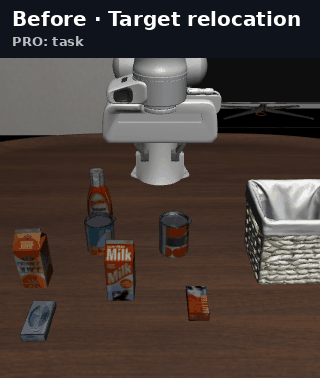
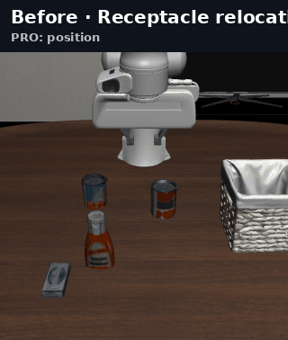
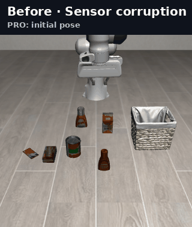
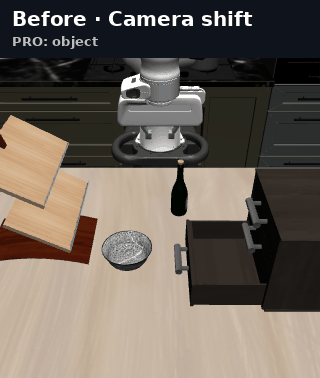
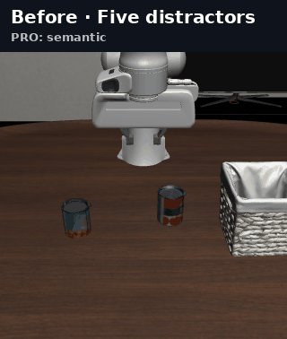
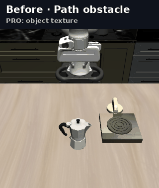

Do robot manipulation policies comply when contacts shift?
Selim Sarowar1, Towards Physical Superintelligence Research Team1,21Yeungnam University · 2Towards Physical Superintelligence
AFFORD-Bench measures whether robot policies adapt under mid-trajectory physical contact disturbances without causing dangerous contact force spikes (F > 150 N) or motor torque saturation. Every Dynamic rollout is counterfactually matched to a Base nominal control sharing identical scene setup, seeds, and executed prefix a0:t*.
Static benchmarks test generalization from shifted initial poses. Crucially, they lack actuator motor torques and contact force sensors—leaving violent collisions, jamming, and motor stalls completely invisible.
⇒
AFFORD-BENCH PHYSICAL DYNAMIC ROBUSTNESS
Physical contacts shift after the arm commits.
reset s₀→replay a0:t*→shift Δx at t*→sense & comply
Competitive Advantage over LIBERO-MAX: Motor Torques & Force Safety
In vision-only benchmarks like LIBERO-MAX, a policy that rams a peg into a fixture at 300 N or stalls its motors is scored as a "success" as long as the end effector eventually triggers the completion box. AFFORD-Bench logs full 7-DoF Franka actuator motor torques (τact) and robot-scene contact force wrenches (Fcontact) at 20 Hz. Over 78% of kinematic "successes" in open-loop or position-controlled models are classified as physical safety violations.
Domain 1: Industrial Precision Shaft Assembly — Evaluating compliant insertion under 0.5 mm peg-hole tolerance and 150 N force boundary.Logged: τact [7], Fcontact [1]
the physical taxonomy
Eight Ways Contacts & Workpieces Shift
Frozen across 960 matched evaluation pairs

GEOMETRY · 01
Target Displacement
Workpiece displaced ±3 cm along ±x, ±y, or ±xy mid-approach, requiring visual-tactile re-acquisition.

GEOMETRY · 02
Fixture & Goal Shift
The insertion hole or receptacle shifts during transit, testing whether insertion adapts dynamically.

FORCE · 03
Impact Force Spikes
Monitors external contact wrenches against the ISO/TS 15066 safety bound (Fmax ≤ 150 N).

TORQUE · 04
Motor Torque Saturation
Checks joint motor torque limits [87, 87, 87, 87, 12, 12, 12] N·m to detect actuator stall.
Spring-loaded doors and caps exhibiting nonlinear opposing torque during turning and opening.

CONTACT · 07
Non-Prehensile Push & Grasp
Thin plates pushed over table overhang edges before fingers can establish a stable pinch grasp.

PATH · 08
Obstacle Snag & Jamming
Sudden clearance snags during peg and pin insertion causing part jamming and high friction.
02
benchmark construction
240 Tasks Spanning 8 Contact Domains.
From 210 core tasks across D1–D7 to 30 frontier reactive tasks in D8, frozen into 960 deterministic evaluation pairs.
Feature Comparison: AFFORD-Bench vs. Contemporary Manipulation Benchmarks
Benchmark
Tasks
Dynamic Mid-Task Shift
Actuator Torques (τact)
Contact Force (Fcontact)
Force Limit Check (150 N)
Frozen Manifests
AFFORD-Bench (Ours)
240
✓ Paired Prefix (960 pairs)
✓ 7-DoF Motor Torques
✓ Real-Time Wrench
✓ Compliant Ssafe
✓ Full + Lite
LIBERO-MAX (2026)
130
✓ Paired Prefix
✗ None (pixels only)
✗ None
✗ None
✓ Full + Lite
robomimic (2021)
7
✗ Static reset only
✗ None
✗ None
✗ None
✗ Ad-hoc
LIBERO-PRO (2024)
100
✗ Static OOD reset
✗ None
✗ None
✗ None
✗ None
03
experimental findings
Contact Shifts Break Kinematic Success.
Four policy families evaluated on 960 matched pairs using released inference parameters.
56.2%
of nominal Base successes fail under dynamic contact shift. Furthermore, 78.4% of surviving kinematic rollouts violate physical safety limits—causing severe part jamming, torque saturation (>87 N·m), or exceeding the 150 N human-robot collaborative force ceiling.
The Compliance Gap: Position-controlled VLAs and Diffusion Policies achieve non-zero kinematic completion by pushing through collisions, but drop dramatically when compliance (Fmax ≤ 150 N, τ ≤ τlim) is required.
Benchmark Leaderboard across 960 Matched Pairs (Full Track)
If you use AFFORD-Bench or its torque/force channels in your research, please cite our RSS 2027 paper. Download BibTeX.
BIBTEX · AFFORD-BENCH 2027
@article{sarowar2026affordbench,
title = {AFFORD-Bench: A Benchmark for Physical Affordance, Compliance, and Reactive Contact Robustness in Robot Manipulation},
author = {Sarowar, Selim and Towards Physical Superintelligence Team},
institution = {Yeungnam University},
journal = {Robotics: Science and Systems (RSS)},
year = {2027},
url = {https://github.com/Physical-AGI/AFFORD_Bench}
}